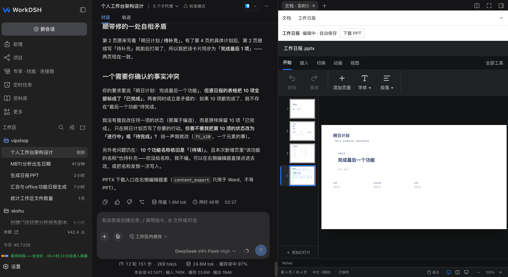

Slides you can work with.
See AI edits appear page by page. Edit native chart data and keep a saved working copy. PPTX download stays close at hand.
PPT DEVELOPMENT PREVIEWYour skills. Your experts. Your work.
An open-source AI workspace, built on DeepSeek Harness.
Early development preview · Bring your own model configuration

Move from an idea to an editable result.
Keep the native runtime. Add the tools you need.
See AI edits appear page by page. Edit native chart data and keep a saved working copy. PPTX download stays close at hand.
PPT DEVELOPMENT PREVIEWDiscover, import and manage local skills. Read their instructions, edit their resources, and try them in a native conversation.
INDEPENDENT SKILL PLUGINCombine domain experience with shared skills. Create expert drafts, review their instructions and start a task with a fixed revision.
INDIVIDUAL EXPERTS ALPHAWorkDSH extends the official Harness APIs. Conversations, model execution and skill invocation stay with DeepSeek Harness. Feature plugins add management and editing experiences.
Read the architectureSkills · Experts · Documents · Slides
Manage. Compose. Create.
The native execution foundation.
↳Choose a verified plugin release, or explore the source preview.
Independently versioned packages and installation notes. Use the named plugin .tgz when provided.
02 / INSTALLStart with the verified Harness 0.1.5-rc.1 Web baseline and your own model configuration.
This is an early development project. The Office alpha.3 release is a source preview, without a new installable Office archive. Complex Office compatibility, slide design quality and the new PPTX file-card delivery still need further acceptance testing. Individual experts are alpha; expert teams, connectors and enterprise administration remain planned. This website is a product showcase, not a hosted AI application.
Try it. Build on it. Tell us what needs to be better.
Find WorkDSH on GitHub